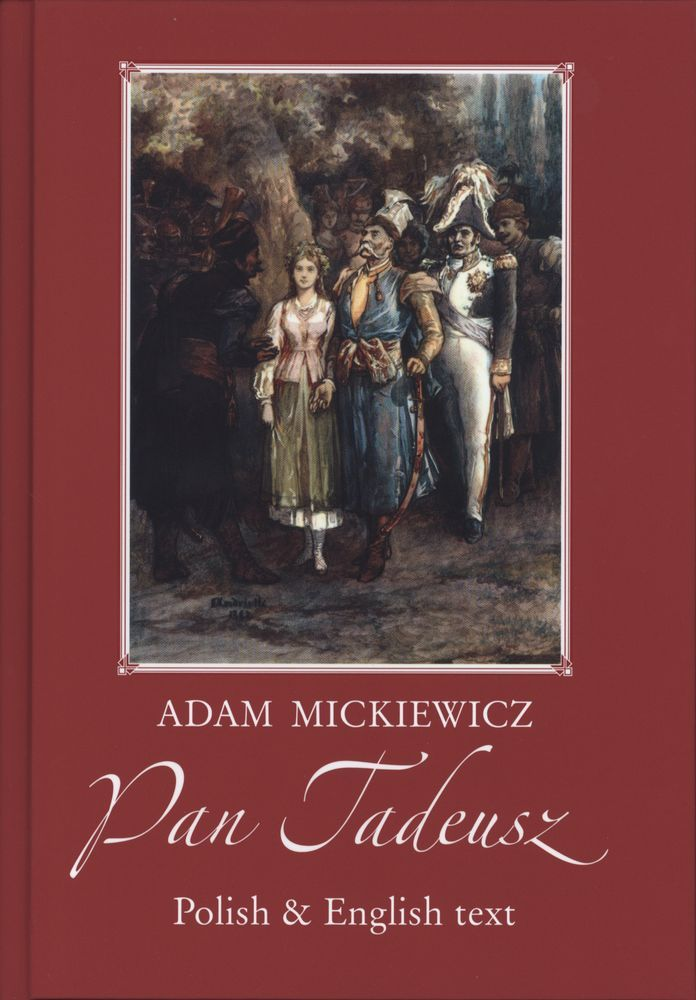

Pan Tadeusz, czyli ostatni zajazd na Litwie:
historia szlachecka z roku 1811 i 1812 we dwunastu księgach wierszem
Spis treści:
Strona główna
~ Księga 1
~ Księga 2
~ Księga 3
~ Księga 4
~ Księga 5
~ Księga 6
~ Księga 7
~ Księga 8
~ Księga 9
~ Księga 10
~ Księga 11
~ Księga 12
